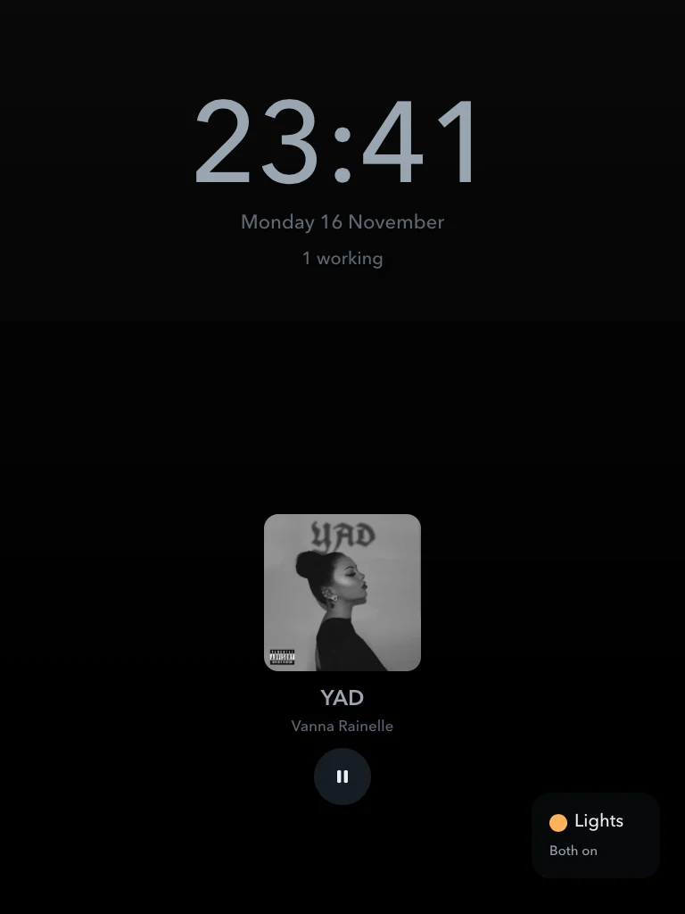
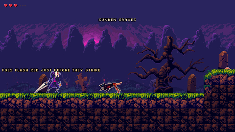
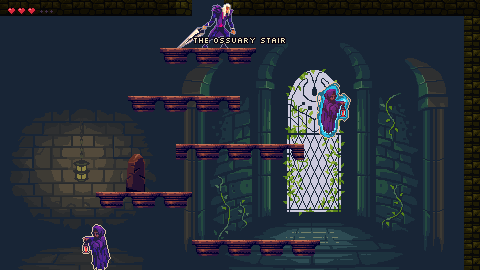
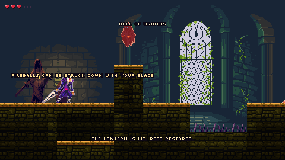
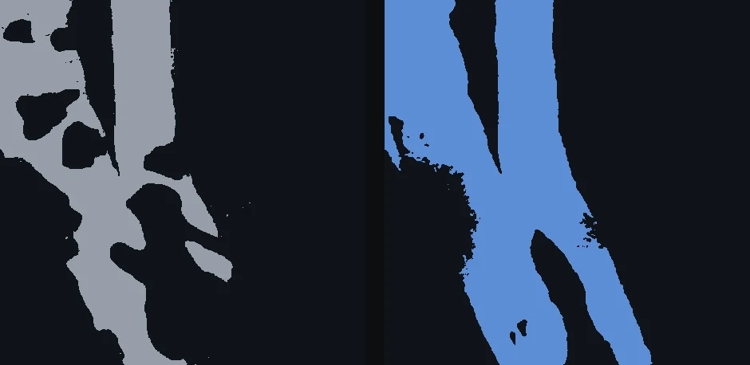

Ashmit
Kundu
Small things, finished.
A control surface for my desk, a gothic platformer you can finish in half an hour, and machine learning from college. Each one runs, each one is tested, and every number on this page says how it was measured.
Sidekick
A 2012 iPad mini, turned into the quiet second screen of one Windows desk.
It stands beside the keyboard and takes the small, constant interruptions off the main screen: which AI coding session needs an answer, what is playing, which window you were in, the room's lights. One touch each, without leaving what you are doing.
Colour carries meaning on the device and nowhere else: amber when something wants you, blue for where you are, green for sound, red for muted. While music plays, the canvas takes the colour of the song.
Built with AI coding agents, mainly Claude Code. I decided what it should do, used each version on the iPad every day and judged what had to change; the agents wrote, tested and reviewed the code.



Built for old hardware. An A5 processor, 512 MB and iOS 8's WebKit mean no CSS variables, no grid and no modern JavaScript. The page is plain ES5 inside a small Objective-C shell, and it audits its own layout on the device.
No stale actions. Every touch names the window, tab or track it was drawn for, by ids the PC issued. The PC checks again and refuses if anything changed, and lists never move under a finger.
Local only. The C# agent listens on 127.0.0.1 and turns away web pages by host, origin and fetch site. The iPad reaches it through an SSH tunnel with a pinned host key.
Tested without touching the desk. 263 automated checks: 210 for the agent's decisions, 36 headless sequences against a simulated PC, and 17 for the gate that keeps window-moving tests off a PC someone is using.
What survived the A5
Every planned animation was measured on the iPad itself, against a target of 90 % of frames within 20 ms and none over 50 ms. Most were cut rather than tuned.
| Motion | Measured on the device | Kept |
|---|---|---|
| Panel fades in | 100 % of frames within 20 ms | Yes |
| New row fades in place | 90 %, longest frame 34–37 ms | Yes |
| Destination slide | 70–92 %, with long frames | Cut |
| Panel closing fade | one 50–60 ms frame | Cut |
| Song artwork crossfade | passed alone, not with the rest | Cut |
Bellhollow
The great bell fell silent and the dead stopped sleeping. A short gothic sword platformer in Godot 4.
You play the bell-ringer's apprentice, climbing a haunted hill through graveyard, crypts and bell tower to the thing roosting in the belfry. A sword with a three-hit combo, a pogo, and a dash found halfway; every enemy shows one honest warning before it strikes.
Built in a day with an AI coding agent (Claude), milestone by milestone, with my playtesting between them: movement got lighter, the combo's three moves were made distinct and the pogo simpler after I played it. The art, sound and music are free CC0 packs by ansimuz, Kenney and Juhani Junkala; the rooms, code, tuning and tests are the project's own.
- Length
- 20–30 minutes
- Rooms
- 10, hand-made
- Enemies
- 4 kinds and a two-phase boss
- Checks
- 9,203, including proof that all 10 rooms are reachable

Sunken Graves 
The Ossuary Stair 
Hall of Wraiths
From college
Three machine-learning projects, each with the result it reached and the catch in how it was measured.
-
Flood mapping from radar
A U-Net with a ResNet-34 encoder segments flood water in Sentinel-1 radar, which sees through the cloud that hides floods from optical satellites. The checkpoint was chosen on the same validation set.

Water in one held-out tile: hand-labelled (grey) and predicted (blue). The prediction follows the river but fills in some of its islands. Masks recoloured for this page. 0.66 IoU on validation
-
Hindi named entities
Multilingual BERT fine-tuned on WikiAnn to tag people, organisations and places in Hindi text, scored once on the untouched test split.
0.91 F1 on test
-
Emotion in speech
A 1-D CNN over audio features on RAVDESS. Augmented copies of each clip landed on both sides of the split, so this score is optimistic; holding out whole actors would be fair.
58% over 7 emotions